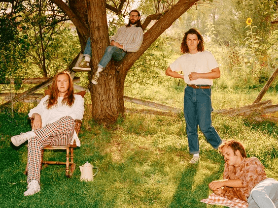
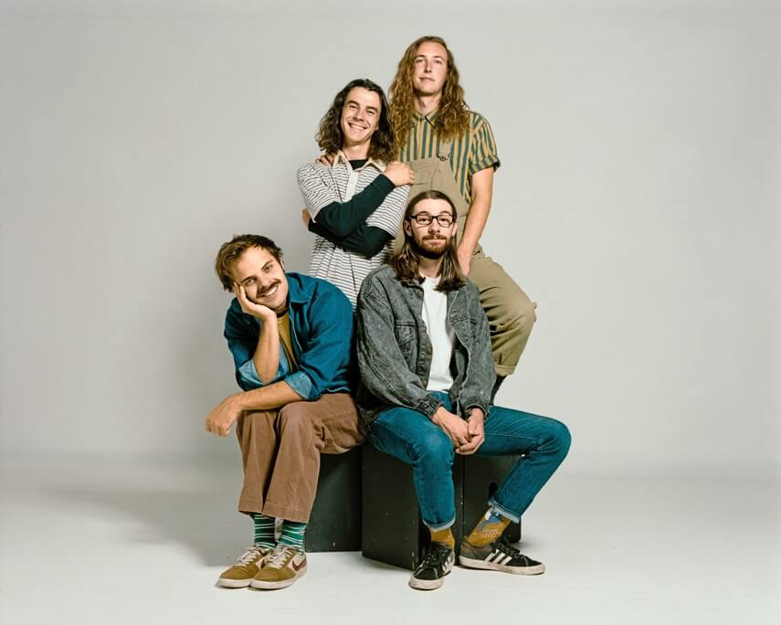
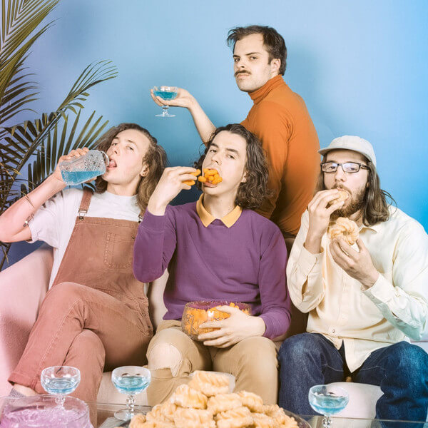

NOTICIAS

La banda de Vancouver Peach Pit está preparada para cosas mucho más grandes con el próximo lanzamiento del álbum.
El nuevo album de peach pit es perfecto para tocar durante un día bajo el sol.

El cuarteto nominado como grupo revelación del año nos habla del camino hacia su exito

La banda presenta 'You and Your Friends', su segundo álbum lleno de referencias cotidianas.